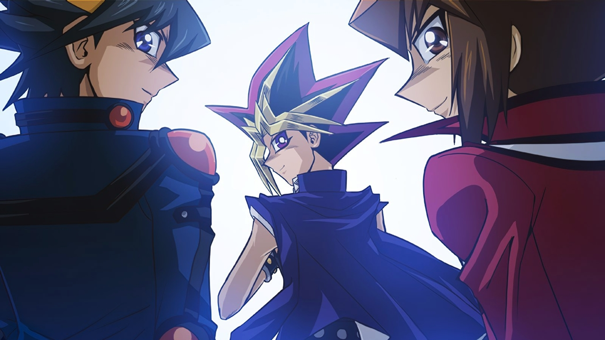

El medio Stars and Stripes, una organización de noticias militares de Estados Unidos que proporciona noticias e información independientes a la comunidad militar de todo el mundo, informó que un oficial del Ejército de los Estados Unidos fue reconocido por rescatar a tres personas de una corriente de agua en un popular lugar de buceo de Okinawa, en un episodio en el que aparentemente murió un conocido artista de manga japonés.
El mayor Robert Bourgeau, de 49 años, de Missoula, Montana, oficial adjunto de operaciones del Décimo Grupo de Apoyo en la estación de Torii en Yomitan, fue nominado por su mando el mes pasado para la Medalla del Soldado por sus acciones durante el rescate del 4 de julio en la Gruta de la Sirena en Onna. La medalla reconoce los actos de heroísmo que no implican un conflicto real con el enemigo.
Kazuki Takahashi, de 60 años, creador de la popular serie de manga japonesa Yu-Gi-Oh!, intentó ayudar a Bourgeau en el rescate, sin que el estadounidense lo supiera, y se ahogó en el proceso, dijo un dolido Bourgeau a Stars and Stripes el 3 de octubre. «Uno nunca deja de preguntarse ‘qué hubiera pasado sí’. Este tipo tuvo un gran impacto en el mundo», comentó.
El cuerpo de Takahashi fue encontrado dos días después a unos 1000 pies de la costa en Awa, ciudad de Nago, dijo un portavoz de la Guardia Costera de Japón a Stars and Stripes por teléfono el 4 de octubre. Su coche de alquiler fue encontrado más tarde en la Gruta de la Sirena, dijo el portavoz. El portavoz de la Guardia Costera declinó confirmar la participación de Takahashi en el intento de rescate, sin embargo, sus acciones ese día se detallan en varias declaraciones de testigos jurados proporcionadas por el Ejército.
Bourgeau, instructor de buceo, se había reunido con un par de estudiantes en la Gruta de la Sirena poco después de las 2 de la tarde de ese día. «Las condiciones eran muy, muy duras», dijo. Bourgeau vio a una mujer japonesa pidiendo ayuda, dijo. Señaló a su hija, de 11 años, y a un soldado estadounidense, de 39 años, que estaban atrapados en una corriente de agua a unos 100 metros de la orilla.
La corriente de resaca estaba succionando a la pareja, pero las olas de más de dos metros se estrellaban contra ellos, creando un efecto de remolino, recordó Bourgeau. Todavía con sus zapatos deportivos, él y uno de sus estudiantes se dirigieron hacia los buceadores a través de aguas poco profundas mientras el otro estudiante llamaba a los servicios de emergencia.
Bourgeau saltó a la corriente y se dirigió a la niña, pero se agotó rápidamente mientras trabajaba para llevarla a las aguas poco profundas, dijo. Entonces se encontró con su madre, que de alguna manera también había sido absorbida por las aguas. «Agarré a mamá y la agarré [a la niña] y me dediqué a dar patadas para salvarla», mencionó.
En algún momento del rescate, Takahashi entró en el agua, dijo Bourgeau. Dijo que no vio al icono japonés durante la prueba. Los alumnos de Bourgeau lo vieron hasta que desapareció bajo las olas. «Es un héroe», dijo. «Murió intentando salvar a otra persona». Bourgeau dijo que llevó a las mujeres a las aguas poco profundas y volvió a por el soldado. Intentó ayudarle a salir del remolino, pero pronto se quedó sin energía y corrió el peligro de ahogarse.
«Fue una de las cosas más difíciles que he tenido que hacer, dejé que [el hombre] se fuera para poder salvarme», escribió en su declaración para el Ejército de los Estados Unidos. «No creí que fuera a salir adelante», añadió. De alguna manera, Bourgeau encontró sus últimas fuerzas y logró salir, dijo. Entonces pudo dirigir al soldado fuera del remolino y hacia la orilla.
La Guardia Costera de Japón confirmó el informe de la revista militar estadounidense Stars and Stripes de principios de semana en el que se afirmaba que el creador del manga Yu-Gi-Oh!, Kazuki Takahashi, había muerto como “un héroe” tras ayudar al comandante Robert Bourgeau en el rescate de una familia que había quedado atrapada en una corriente marina frente a la costa de Mermaid’s Grotto en Onna, Okinawa, el 4 de julio.
Según el informe inicial, el 11 de octubre, Bourgeau, que también es instructor de submarinismo, y un alumno suyo recibieron la llamada de una mujer japonesa para que ayudaran a su familia, un soldado estadounidense y su hija de 11 años, que estaban atrapados en una corriente de resaca. Bourgeau explicó que, en algún momento del rescate, Takahashi se unió a la pareja. Aunque Bourgeau no vio al hombre, sus alumnos que estaban en la playa sí lo hicieron.
La Guardia Costera de Japón no quiso hacer comentarios sobre el reportaje de Stars and Stripes, sino que inició una investigación sobre la historia y concluyó hoy que el informe coincide con lo que la Guardia Costera de Japón descubrió, anunciando la noticia a los medios de comunicación japoneses. En un principio, los guardacostas de la ciudad de Nago habían dicho que Takahashi había estado buceando solo cerca del pueblo de Onna, cerca de la Gruta de la Sirena, y que fue allí donde se ahogó y fue encontrado en una playa a 300 metros de la costa de la ciudad de Nago el 7 de julio.
Los guardacostas informan ahora de que “el señor Takahashi entró en el agua para rescatar a la niña y luego desapareció. Se determinó que fue un accidente en el mar“. Los guardacostas también explicaron que estaban al tanto del incidente con la familia en julio, pero “se abstuvieron de hacer públicos los detalles del incidente” en consideración al bienestar de la niña.